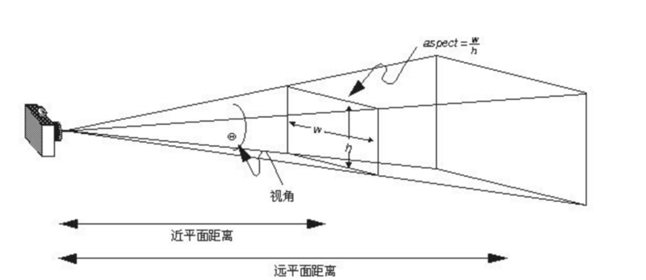

背景介绍
OpenGL与WebGL
[OpenGL]是关于2维3维计算机图形技术，Khronos Group对各种技术进行了标准化并制定了[OpenGL]，作为Windows、Mac、Linux上的一种跨平台技术并一直活跃着。Khronos Group把这样的OpenGL技术运用到WEB浏览器并制定了WebGL。WebGL 是 OpenGL 和 JavaScript 之间的结晶，HTML5 的 canvas 元素里，利用和OpenGL同样的API，可以绘制高精度的三维图像。
WebGL是在浏览器中实现三维效果的一套规范。
THREE.JS
虽说通过WebGL的绘制效果甚至可能达到本地的高性能游戏专用机的绘制效果，但WebGL直接对gpu进行操作，如果没有非常精通OpenGL的人在还是不太现实的。因此，为了能够更加简单的利用WebGL，库「Three.js」被发表了。因为 Three.js 非常好用，所以很快变得非常有人气。WebGL的javascript框架除了Three.js之外，还有「J3D」和「SceneJS」和日本开发的「gl.enchant.js」等。
THREE.JS是简化WebGL操作的一个第三方库
构成组件
场景、相机、对象、渲染器、控制器…
场景
Scene( )
定义一个绘制的区域
add(object)
添加对象到场景中
相机（Camera）
Camera( )
创建一个新的视角。

OrthographicCamera ( left : Num, right : Num, top : Num, bottom : Num, near : Num, far : Num )
left — 摄像机视锥体左侧面。
right — 摄像机视锥体右侧面。
top — 摄像机视锥体上侧面。
bottom — 摄像机视锥体下侧面。
near — 摄像机视锥体近端面。
far — 摄像机视锥体远端面。
（正交摄像机）
PerspectiveCamera ( fov : Num, aspect : Num, near : Num, far : Num )
fov — 摄像机视锥体垂直视野角度
aspect — 摄像机视锥体长宽比
near — 摄像机视锥体近端面
far — 摄像机视锥体远端面
（透视摄像机）

这些参数一起定义了摄像机的viewing frustum（视锥体）。
StereoCamera( )、ArrayCamera( )…
.position: 相机位置
.lookAt: 相机朝向位置
.up: 相机顶部位置
CSS3
perspective:视点到显示器的距离，默认none。
perspective-origin:试点在应用元素的位置，默认中心。
点线面体与精灵
Sprite精灵是一个总是面朝着摄像机的平面，不会投射任何阴影。
对象的组成
Mesh(Geometry, Material)：创建Mesh网格对象
geometry = new THREE.CubeGeometry(1,1,1);
material = new THREE.MeshBasicMaterial({color: ‘#69c0ff’});
cube = new THREE.Mesh(geometry, material);
Geometry
BufferGeometry()
是面、线或点几何体的有效表述。包括顶点位置，面片索引、法相量、颜色值、UV 坐标和自定义缓存属性值。使用 BufferGeometry 可以有效减少向 GPU 传输上述数据所需的开销。(数据结构不同，缓冲性能更好)
var geometry = new THREE.BufferGeometry( );
Geometry()
Geometry 是对 BufferGeometry 的用户有好替代。Geometry 利用 Vector3 或 Color 存储了几何体的相关 attributes（如顶点位置，面信息，颜色等）比起 BufferGeometry 更容易读写，但是运行效率不如有类型的队列。
var geometry = new THREE.Geometry();
// 点集合
geometry.vertices.push(
new THREE.Vector3( -10, 10, 0 ),
new THREE.Vector3( -10, -10, 0 ),
new THREE.Vector3( 10, -10, 0 )
);
// 面集合
var face = new THREE.Face3( 0, 1, 2, normal, color, materialIndex );
geometry.faces.push(face);
var color = new THREE.Color( 0xffaa00 )
geometry.colors.push(color);
scene.add( new THREE.Mesh( geometry, material ) );
three.js 给出了很多方法去生成固定的网格形状，如：
长方体(BoxGeometry)、
球体(SphereGeometry)、
圆形(CircleGeometry)
曲线旋转体(LatheGeometry)

ExtrudeGeometry(二维拉伸成三维)

TorusKnotGeometry(圆环结)、
TubeGeometry(拉伸管)…
还有根据坐标去生成具体形状的方法，可以借助第三方建模软件建模之后导入。
有一系列支持外部导入文件的辅助函数，是在three.js库之外的，使用前需要额外下载。
Material
ShaderMaterial( )
three.js给出的多种直接生成材质的方法，比较常用的有：
MeshNormalMaterial（对光照无感，不受渲染时使用的颜色影响的材质，只与自己每一个面从内到外的法向量有关）
法向量在WebGL中用处十分广泛，光的反射，以及三维图形的纹理映射都与这个有关
MeshPhongMaterial（对光照有反应，无光源则不会显示，用于创建金属类明亮的物体）、
MeshLambertMaterial（对光照有反应，无光源则不会显示，用于创建暗淡的不发光的物体）、
MeshDepthMaterial （使用从摄像机到物体的距离来给网格上色，白近黑远）、
MeshBasicMaterial（对光照无感，给几何体一种简单的颜色或显示线框）…
Texture
纹理：可以简单理解为贴图
Color
Light
物体之所以能被人眼看见，一种是它自身的材料就能发光，不需要借助外界光源；
另一种是自身材料不发光，需要反射环境中的光。
对于自身不能发光的物体，需要给场景添加光源从而达到可视的效果。
three.js中可以创建出很多不同类型的光源，
点光源（PointLight，放出的光线来自同一点，且方向辐射自四面八方，例如蜡烛发出的光），
环境光（AmbientLight，它的颜色会添加到整个场景和所有对象的当前颜色上），
方向光（DirectionalLight，也称无限光，发出的光线可以看作是平行的，例如太阳光），
聚光灯（SpotLight，从一个锥体中射出，在被照射的物体上产生聚光的效果，例如手电光等）
平面光（RectAreaLight，模拟像明亮的窗户或者条状灯光光源）
阴影
能形成阴影的光源只有：THREE.DirectionalLight与THREE.SpotLight；
能表现阴影效果的材质只有：THREE.LambertMaterial与THREE.PhongMaterial。
渲染阴影的开销比较大，所以默认物体是没有阴影的，需要单独开启。
开启阴影方法：
将渲染器的shadowMapEnabled属性设置为true（告诉渲染器可以渲染隐形)
将物体及光源的castShadow属性设置为true（告诉物体及光源可以透射阴影)
将接收该阴影的物体的receiveShadow属性设置为true（告诉物体可以接收其他物体的阴影）
渲染器 (Render)
WebGLRenderer( parameters : Object )
domElement : DOMElement
一个canvas，渲染器在其上绘制输出。
渲染器的构造函数会自动创建(如果没有传入canvas参数);你需要做的仅仅是像下面这样将它加页面里去:
renderer = new THREE.WebGLRenderer({
antialias: true,
alpha: true,
});
renderer = document.body.appendChild(renderer.domElement);
setSize ( width : Integer, height : Integer, updateStyle : Boolean )
将输出canvas的大小调整为(width, height)并考虑设备像素比，且将视口从(0, 0)开始调整到适合大小 将updateStyle设置为false以阻止对canvas的样式做任何改变
render ( scene, camera, renderTarget : WebGLRenderTarget, forceClear : Boolean )
渲染一般是在canvas上完成的，或者是renderTarget(缓冲区)
画面初始化步骤
1.重置缓存。
2.更新场景。
3.更新相机矩阵和视锥体。
4.初始化 WebGLRenderState。
5.视景体矩阵计算，为相机的投影矩阵与相机的世界矩阵的逆矩阵的叉乘。
6.WebGLRenderList 的初始化。
7.shadow 的绘制。
8.背景的绘制。
9.渲染 scene。
10.如果overrideMaterial，则强制使用场景的材质 overrideMaterial 来统一 render 物体。
11.分别对 opaque 和 transparent 的物体进行 render。
控制器
OrbitControls(object: Camera,domElement: HTMLDOMElement):轨道控制器
DragControls(object: Camera,domElement: HTMLDOMElement):拖动控制器
TransformControls(object: Camera,domElement: HTMLDOMElement):对象控制器
…
原理与优化
矩阵
WebGL渲染管线
渲染管线指的是WebGL程序的执行过程，主要分为以下个步骤：
1.顶点着色器的处理，主要是一组矩阵变换操作，用来把3D模型（顶点和原型）投影到viewport上，输出是一个个的多边形，比如三角形。
2.光栅化，也就是把三角形连接区域按一定的粒度逐行转化成片元（fragement），类似于2D空间中，可以把这些片元看做是3D空间的一个像素点。
3.片元着色器的处理，为每个片元添加颜色或者纹理。只要给出纹理或者颜色，以及纹理坐标(uv)，管线就会根据纹理坐标进行插值运算，将纹理或者图片着色在相应的片元上。
4.把3D空间的片元合并输出为2D像素数组并显示在屏幕上:
(1)裁剪测试
(2)多重采样片段操作
(3)背面剔除
(4)alpha测试
(5)模板测试
(6)alpha融合
(7)深度测试
(8)融合
5.帧缓存
获取顶点坐标 => 图元装配（画出一个个三角形）=> 光栅化（生成一个个像素点)
Three.js做了啥？
画个地球
requestAnimationFrame()
由系统决定回调函数的执行时机。
60Hz的刷新频率，把每一帧中的所有DOM操作集中起来，在一次重绘或回流中就完成,
保证回调函数在屏幕每一次的刷新间隔中(16.7ms)只被执行一次，不会引起丢帧，不会卡顿。
全景看房
粒子特效
https://www.apollozz.com/demo/projects/imageDataP/index.html
getImageData( )

三体水滴
TWEEN.js
生成平滑动画效果的js动画库
Demo
地球：
全景看房：
粒子特效：
有趣的实例
淘宝造物节
腾讯地球：https://wa.qq.com/xplan/earth/index.html?_wv=1
腾讯粒子特效：http://up.qq.com/act/a20170301pre/index.html
谷歌地球：https://experiments.withgoogle.com/chrome/globe
跑车游戏：http://hexgl.bkcore.com/
逼真实物：http://www.yanhuangxueyuan.com/3D/yuzhuo.html
镜面反射：https://ithanmang.gitee.io/threejs/home/201809/20180906/01-envMap-cubeCamera-texture.html